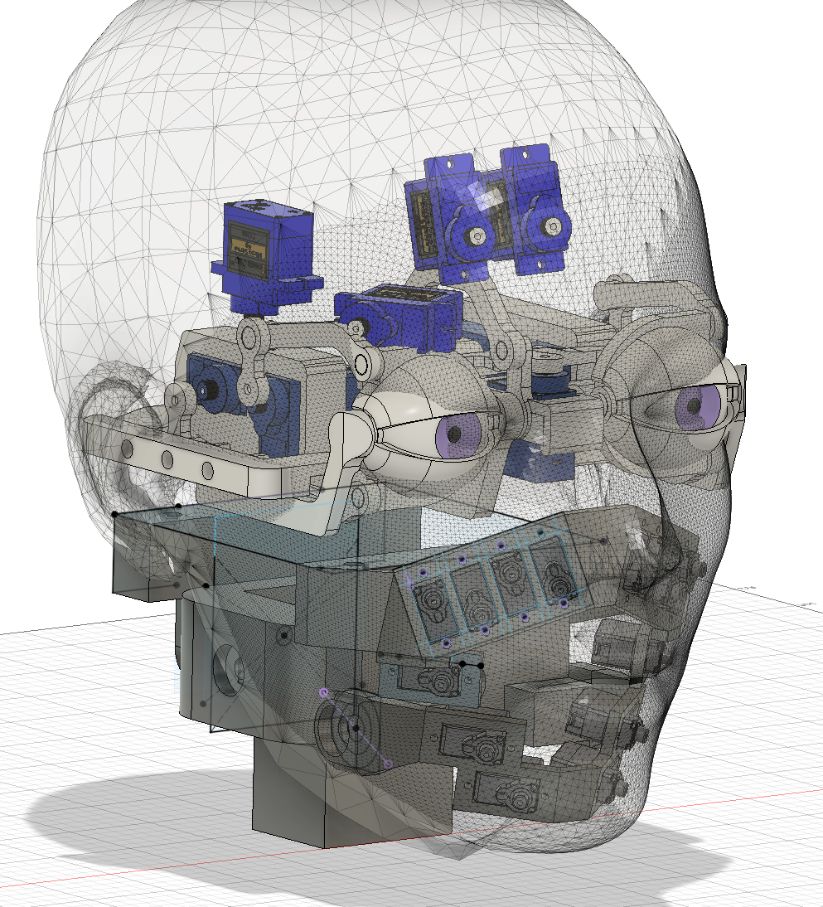
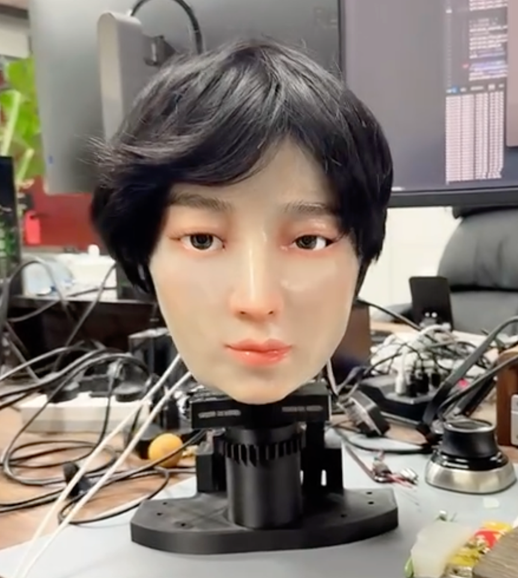
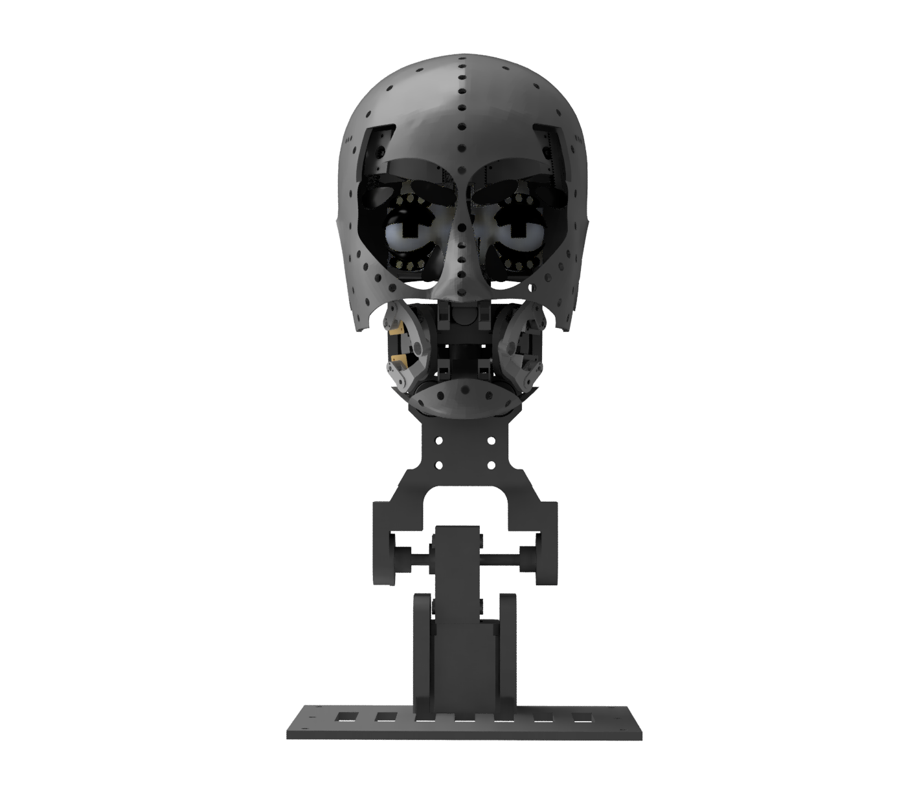
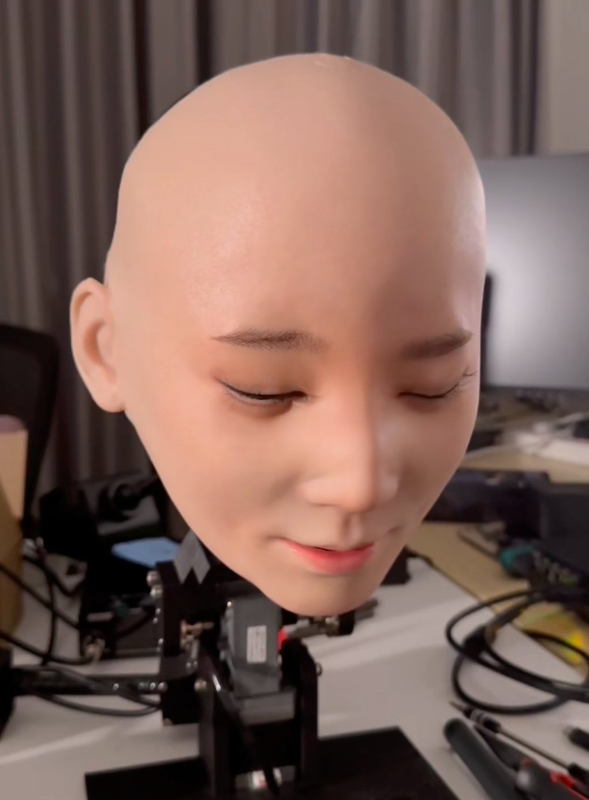

Demo 01：结构与模仿展示
鹏睿机器人v1的结构展示以及初代表情模仿算法。
人面机器人是面向自然人机交互的重要研究方向。相比传统机器人，其在亲和力、视觉表达与沟通自然度方面具有更大的潜力。鹏睿机器人项目聚焦于拟人化外观设计、面部表情表达、智能交互体验与多版本迭代验证，希望构建一个能够持续演进、便于展示和扩展的人面机器人平台。
鹏睿机器人是广东省智能感知与计算重点实验室持续研发的人面机器人平台。项目通过多代版本迭代，在机器人外观、面部结构、表情呈现和展示组织方式上不断探索与完善。
当前项目由2024年至今已形成鹏睿 v1、鹏睿 v2、鹏睿 v3、鹏睿 v4 四个阶段版本。




鹏睿机器人经过四次版本更新，在机械设计，自然交互等方面有了充足的进步。
鹏睿机器人v1的结构展示以及初代表情模仿算法。
鹏睿v1初步实现的表情动作、局部结构运动。
鹏睿v2的机械结构视频展示。
鹏睿v2在面部动作协调性方面有极大的提升。
鹏睿v2设计的颈部机构运动幅度大幅增加。
开发鹏睿机器人初代动作跟随算法。
我们的工作：Morphology-Independent Facial Expression Imitation for Human-Face Robots。
鹏睿v4在自由度、运动幅度、响应速度上都有了极大的提高。
随着老龄化加剧，人面机器人可以为独居老人提供带有“情绪价值”的陪伴。它们能通过表情和眼神反馈打破传统机器人的“冰冷感”，让关怀和日常对话更具亲和力。
通过微笑、眼神接触和口型同步，提供比屏幕或传统机械人更有温度、更专业的引导服务。
可作为持续迭代的人面机器人研究平台，支持结构、控制与展示研究。
担任外语陪练导师（提供真实的口型和表情反馈以辅助发音）、新闻播报员或主题乐园的互动NPC，利用生动的面部表现力增强受众的沉浸感。
项目名称：人面机器人
机器人名称：鹏睿机器人
实验室：广东省智能感知与计算重点实验室